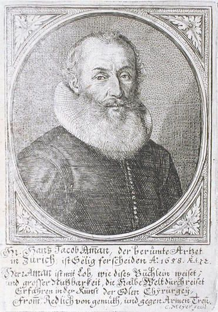
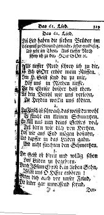
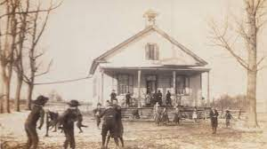
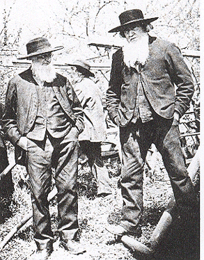

The term Amish was first used as a term of disgrace in 1710 by Jakob Amman's opponents. The first informal division between Swiss Brethren was recorded in the 17th century between those who lived in the hills and those who lived in the Emmental valley. Those who lived in the hills were a more extreme congregation; their zeal drove them to more distant areas, and loneliness made them more zealous.
Swiss Anabaptism developed, from this point on, into two parallel streams, most clearly marked by disagreement over the preferred treatment of "fallen" believers. Those living in the Emmental Valley argued that fallen believers should be restrained only from communion, not from ordinary meals. The Amish argued that those who were banned should be avoided even in regular meals. The Reistian side eventually formed the basis of the Swiss Mennonite Conference. Due to this common heritage, the Amis and Mennonites in southern Germany and Switzerland retain many similarities. Those who leave the Amish rock tend to join the various congregations of conservative Mennonites.
Most of the Amish communities that were established in North America did not ultimately retain their Amish identity. The major division that led to the loss of the identity of many Amish congregations took place in the third quarter of the 19th century. The formation of the fractions worked at different times, in different places. The process was a "sorting" rather than a division. Amish people are free to join another Amish congregation in another place that suits them best.
The more progressive members, who comprised about two-thirds of the group, became known as Amish menites and eventually united with the Mennonite Church and other Mennonite denominations, especially in the early twentieth century. More traditional groups became known as the Old Amish Order. Egli Amish had already begun to withdraw from the Amish church in 1858. They soon moved away from the old ways and changed their name to "Defenseless Mennonite" in 1908. Congregations that did not take part in the division after 1862 formed the Conference. Amish Mennonite conservatives in 1910, but gave up the word "Amish" in their name in 1957.
As there was no division in Europe, the remaining congregations there took on the same path as the Mennonites who were thinking about change in North America and slowly merged with the Mennonites. The last Amish congregation in Germany to merge was the Ixheim Amish Congregation, which merged with the neighboring Mennonite church in 1937. Some Mennonite congregations, including most in Alsace, came directly from former Amish congregations.
Although there were divisions between the Old Order in the 19th century in Mifflin County, Pennsylvania, a major split between the Old Order took place until World War I. At that time, two very conservative affiliations emerged - Swartzentruber Amish of Holmes County, Ohio and Buchanan Amish of Iowa. The Buchanan Amish soon joined congregations with similar thoughts throughout the country.
With World War I came the massive suppression of the German language in the United States, which eventually led to the change of language of most German speakers in Pennsylvania, leaving the Amish and other old orders as almost the only speakers by the end of the twentieth century. This created a language barrier around the Amish that did not exist before in this form.
In the late 1920s, the changing faction of the old Amish order, which wanted to adopt the car, broke away from the mainstream and organized itself as the Beachy Amish.
During World War II, the old issue of military service for the Amish reappeared. Because young Amish generally refused military service, they ended up in the Civilian Civil Service, where they worked mainly in forestry and hospitals. The fact that many young people worked in hospitals, where they had a lot of contacts with the more progressive Mennonites and with the outside world, led to the result that many of these men never joined the Amish church.
In the 1950s, Beachy Amish was transformed into an evangelical church. Those who wanted to keep the old way of Beachy became Old Beachy Amish.
By the 1950s, almost all Amish children attended small, local, non-Amish schools, but then school consolidation and compulsory schooling after 8th grade provoked Amish opposition. Amish communities have opened their own Amish schools. In 1972, the United States Supreme Court exempted Amish students from 8th grade compulsory education. By the end of the twentieth century, almost all Amish children attended Amish schools.
In the last quarter of the twentieth century, a growing number of Amish men left farm work and started small businesses due to increasing pressure on small-scale agriculture. Although there is a wide variety of small businesses among the Amish, construction work and woodworking are quite widespread. In many Amish settlements, especially the largest ones, farmers are now a minority. Approximately 12,000 of the 40,000 dairy farms in the United States have been owned by Amish since 2018.
Until the beginning of the twentieth century, the identity of the Old Amish Order was not related to the use of technology, because the Old Amish Order and their rural neighbors used the same agricultural and household technologies. Questions about the use of technology played no role in the Old Order division of the second half of the nineteenth century. Telephones were the first major technology to be rejected, soon followed by the rejection of cars, tractors, radios, and many other twentieth-century technological inventions.